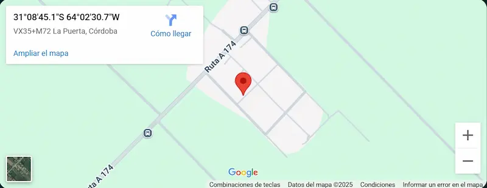

servicio técnico de computadoras Colonia Tirolesa =reparación, limpieza de computadora, instalación de sistema operativo, desbloqueo de notebooks, instalación de periféricos por Nicolás.

Servicios
Reparación de PC
Solución de problemas técnicos, reemplazo de piezas, revisión de hardware, mejora de rendimiento.
Desbloqueo de notebooks
Quitar la dependencia de arranques o bloqueos.
Instalación de sistemas operativos
Formateo completo e instalación de sistemas operativos optimizados.
驴Dónde estamos?
